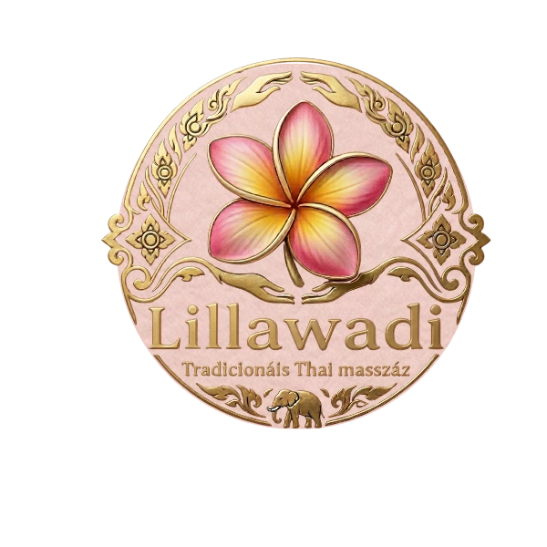
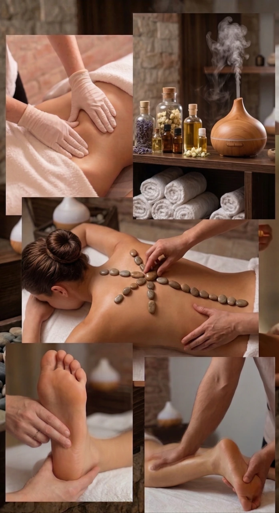
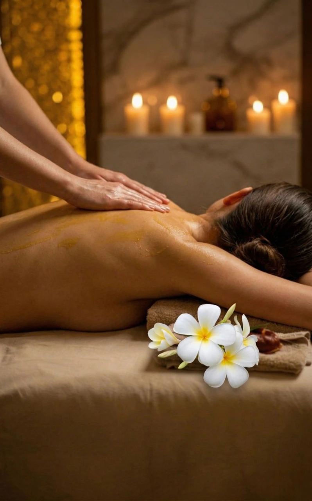
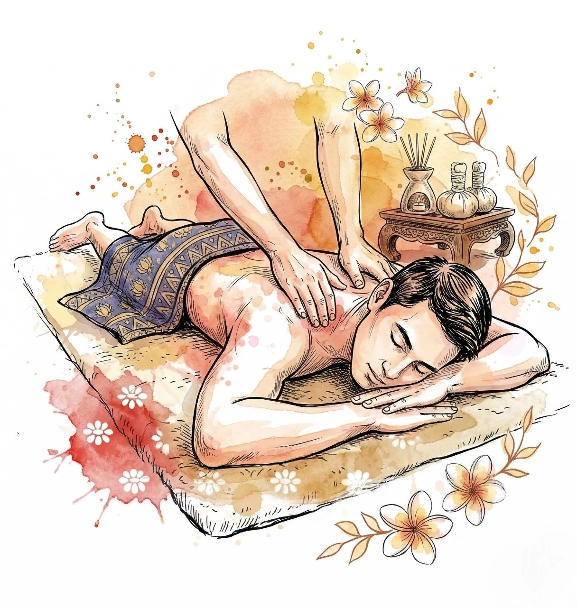
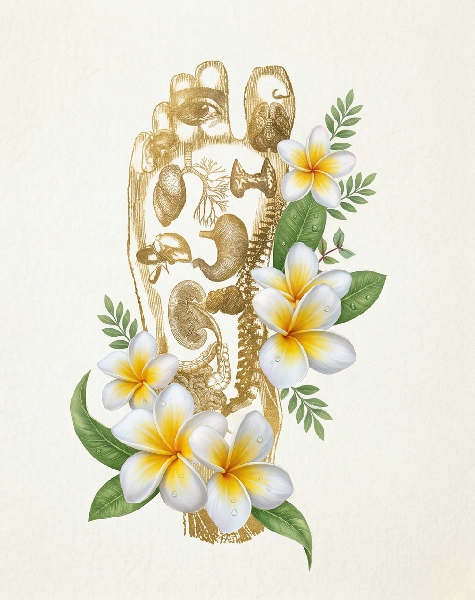
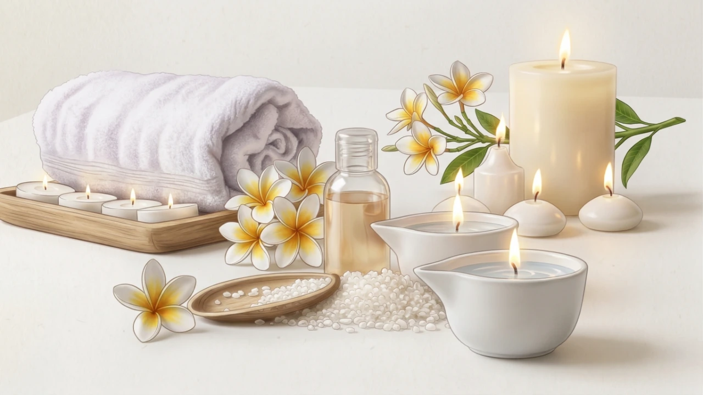
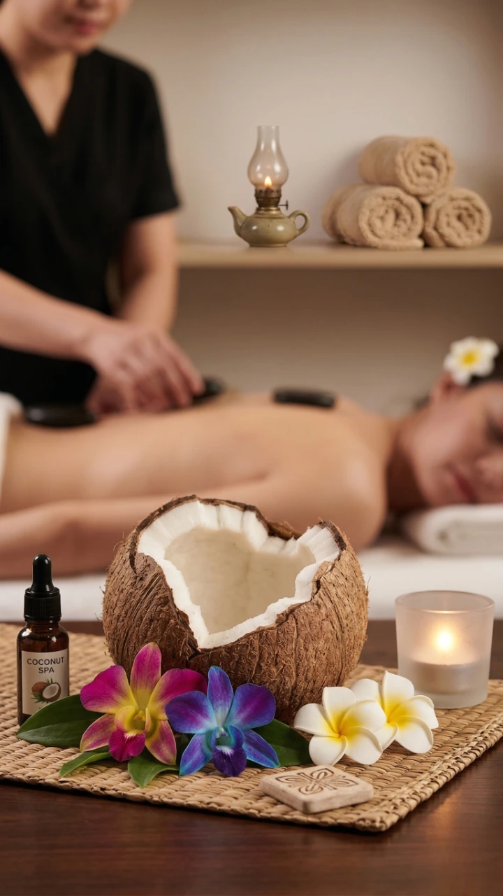

นวดไทยเพื่อการบำบัดและการผ่อนคลาย
* Head • Neck • Shoulders • Back • Feet

A therapeutic experience that combines ancient Thai techniques with modern relaxation.
Traditional Thai massage is a unique form of bodywork that blends acupressure, assisted stretching, and rhythmic compression. Unlike oil massage, it is performed on a mat and focuses on improving energy flow throughout the body.
This technique helps to relieve muscle tension, improve flexibility, stimulate circulation, and restore balance to both body and mind. It is especially beneficial for those experiencing stress, fatigue, or stiffness from daily activities.
Ideal for deep relaxation, recovery, and overall well-being.

A soothing blend of gentle massage and natural essential oils for deep relaxation.
Thai aromatherapy massage combines smooth, flowing techniques with carefully selected essential oils to calm the body and mind. The warm oils are applied with gentle pressure, helping to release tension while creating a deeply relaxing experience.
The natural aromas enhance emotional well-being, reduce stress, and promote better sleep. This treatment is perfect for those seeking a softer, more calming alternative to traditional massage.
Perfect for stress relief, relaxation, and restoring inner balance.
A balanced combination of Thai massage and oil techniques for total body relaxation.
Combination massage blends the stretching techniques of traditional Thai massage with the smooth, relaxing strokes of oil massage. This creates a perfect balance between therapeutic relief and deep relaxation.
It helps to release muscle tension, improve circulation, and restore flexibility, making it ideal for those who want both strong and gentle massage in one session.
Ideal for full-body relaxation, flexibility, and stress relief.

Focused massage designed to relieve tension in specific areas of the body.
Targeted massage concentrates on key tension points such as the head, neck, shoulders, back, and feet. Using precise pressure and techniques, it helps to quickly release tight muscles and improve comfort.
This treatment is ideal for people who experience stiffness from work, long sitting hours, or stress. It provides fast relief and restores mobility in the most affected areas.
Ideal for quick relief, muscle tension, and daily stress recovery.

A relaxing treatment that focuses on reflex points in the feet to restore balance in the body.
Foot massage uses pressure techniques on specific reflex points that correspond to different organs in the body. It helps stimulate circulation, reduce fatigue, and promote overall well-being.
This treatment is especially beneficial for those who stand or walk for long periods, providing deep relaxation and relief from tired feet and legs.
Ideal for relaxation, circulation, and relieving tired feet.

A luxurious massage using warm aromatic candle oil to deeply nourish the skin and relax the body.
Candle aroma massage uses specially formulated massage candles that melt into warm, silky oil. The gentle heat combined with smooth massage techniques helps relieve tension and create a deeply calming experience.
The nourishing oils hydrate the skin while the soothing aroma enhances relaxation, making it a perfect choice for those seeking both wellness and luxury in one treatment.
Ideal for deep relaxation, skin nourishment, and a luxurious spa experience.

A nourishing massage using natural coconut oil to hydrate the skin and relax the body.
This massage uses 100% pure coconut oil, known for its natural moisturizing and healing properties. The smooth techniques help reduce muscle tension while deeply nourishing the skin.
Coconut oil is rich in vitamins and antioxidants, helping to improve skin softness and elasticity, while providing a calming and refreshing experience for both body and mind.
Ideal for skin nourishment, relaxation, and a natural wellness experience.
📞 โทร: +36 20 341 9970
🏪ที่อยู่: Pesti út 41-43, 1173 Budapest, Hungary
Monday: Closed
Tuesday - Sunday
10:00 - 21:00